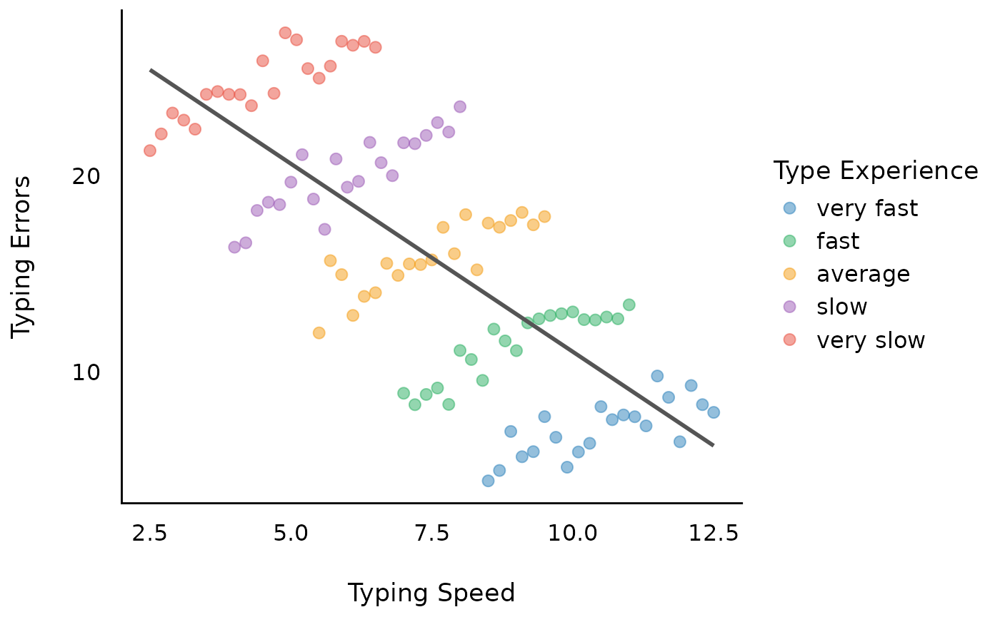
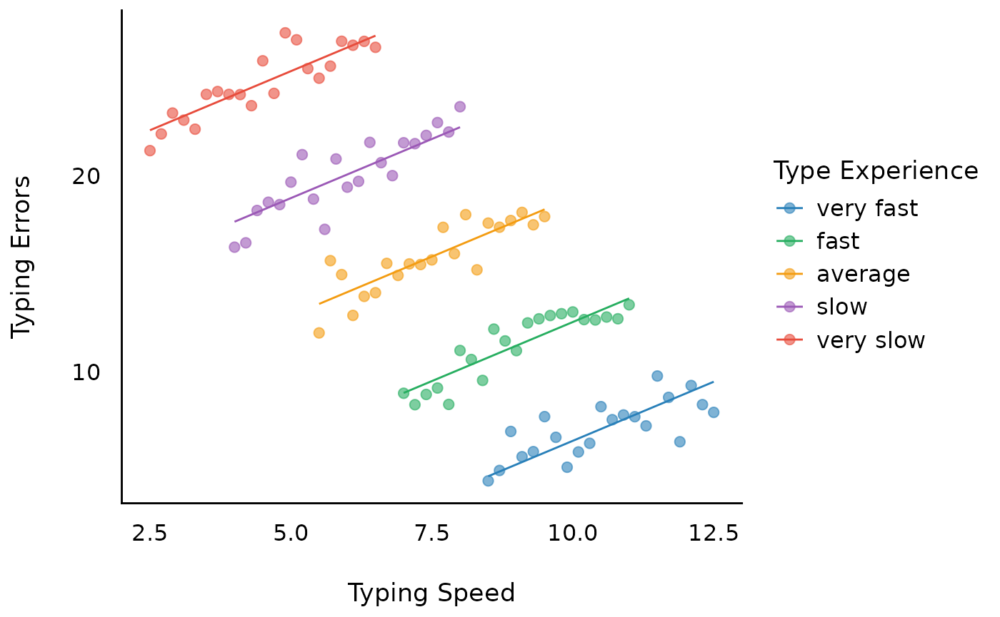
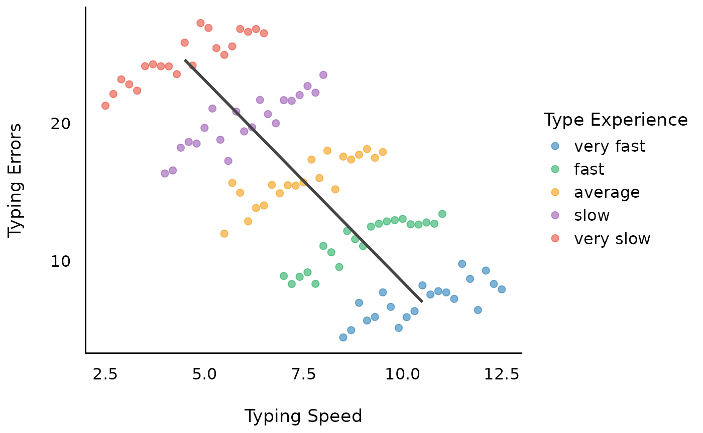
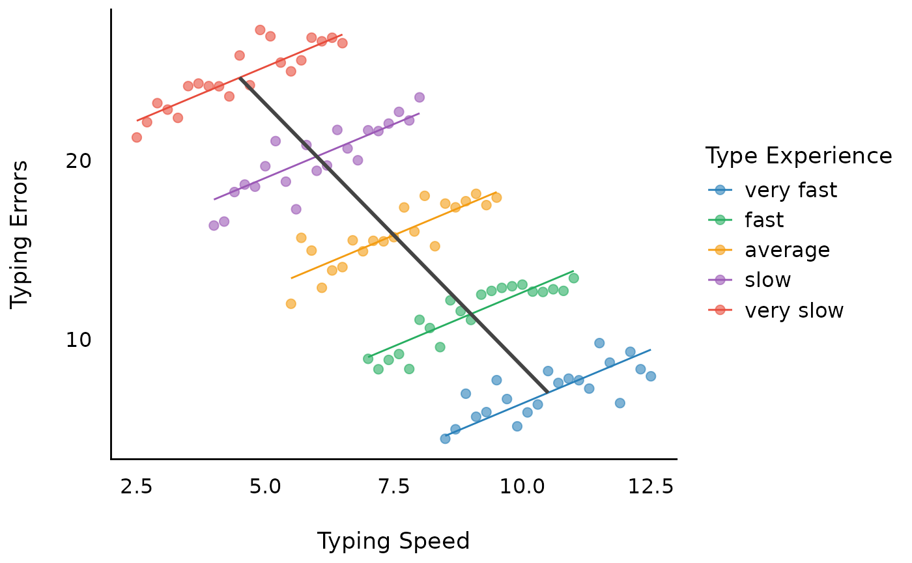

This vignette explains the rational behind the demean()
function.
We give recommendations how to analyze multilevel or hierarchical data structures, when macro-indicators (or level-2 predictors, or higher-level units, or more general: group-level predictors) are used as covariates and the model suffers from heterogeneity bias (Bell and Jones 2015).
Note: Throughout this example, we use
display(format = "tt")to display table output in markdown format, using the tinytable package as the backend. See this vignette for more details on output displays.
Sample data used in this vignette
library(parameters)
data("qol_cancer")-
Variables:
QoL: Response (quality of life of patient)phq4: Patient Health Questionnaire, time-varying variablehospital: Location of treatment, time-invariant variable, co-variateeducation: Educational level, time-invariant variable, co-variateID: patient IDtime: time-point of measurement
Heterogeneity bias
Heterogeneity bias occurs when group-level predictors vary within and across groups, and hence fixed effects may correlate with group (or random) effects. This is a typical situation when analyzing longitudinal or panel data: Due to the repeated measurements of persons, the “person” (or subject-ID) is now a level-2 variable. Predictors at level-1 (“fixed effects”), e.g. self-rated health or income, now have an effect at level-1 (“within”-effect) and at higher-level units (level-2, the subject-level, which is the “between”-effect) (see also this posting). This inevitably leads to correlating fixed effects and error terms — which, in turn, results in biased estimates, because both the within- and between-effect are captured in one estimate.
You can check if your model may suffer from heterogeneity bias using
the check_group_variation() function:
library(performance)
check_group_variation(qol_cancer, select = c("phq4", "education"), by = "ID")
#> Check ID variation
#>
#> Variable | Variation | Design
#> ------------------------------
#> phq4 | both |
#> education | between |Addressing heterogeneity bias: the Fixed Effects Regression (FE) approach
Fixed effects regression models (FE) are a popular approach for panel data analysis in particular in econometrics and considered as gold standard. To avoid the problem of heterogeneity bias, in FE all higher-level variance (and thus, any between-effects), “are controlled out using the higher-level entities themselves, included in the model as dummy variables” (Bell and Jones 2015). As a consequence, FE models are only able estimate within-effects.
To remove between-effects and only model within-effects, the data needs some preparation: de-meaning. De-meaning, or person-mean centering, or centering within clusters, takes away the higher-level mean from the regression equation, and as such, FE avoids estimating a parameter for each higher-level unit.
Computing the de-meaned and group-meaned variables
library(datawizard)
qol_cancer <- demean(qol_cancer, select = c("phq4", "QoL"), by = "ID")Now we have:
phq4_between: time-varying variable with the mean ofphq4across all time-points, for each patient (ID).phq4_within: the de-meaned time-varying variablephq4.
A FE model is a classical linear model, where
Intercept is removed
time-invariant predictors are not allowed to be included
the group-level factor is included as predictor
time-varying predictors are de-meaned (“person-mean centered”, indicating the “within-subject” effect)
fe_model1 <- lm(
QoL ~ 0 + time + phq4_within + ID,
data = qol_cancer
)
# we use only the first two rows, because the remaining rows are
# the estimates for "ID", which is not of interest here...
model_parameters(fe_model1)[1:2, ] |> display(format = "tt")| Parameter | Coefficient | SE | 95% CI | t(374) | p |
|---|---|---|---|---|---|
| time | 1.09 | 0.64 | (-0.17, 2.34) | 1.70 | 0.089 |
| phq4 within | -3.66 | 0.41 | (-4.46, -2.86) | -8.95 | < .001 |
# instead of removing the intercept, we could also use the
# de-meaned response...
fe_model2 <- lm(
QoL_within ~ time + phq4_within + ID,
data = qol_cancer
)
model_parameters(fe_model2)[2:3, ] |> display(format = "tt")| Parameter | Coefficient | SE | 95% CI | t(374) | p |
|---|---|---|---|---|---|
| time | 1.09 | 0.64 | (-0.17, 2.34) | 1.70 | 0.089 |
| phq4 within | -3.66 | 0.41 | (-4.46, -2.86) | -8.95 | < .001 |
# we compare the results with those from the "lfe"-package for panel data
library(lfe)
fe_model3 <- felm(
QoL ~ time + phq4 | ID,
data = qol_cancer
)
model_parameters(fe_model3) |> display(format = "tt")| Parameter | Coefficient | SE | 95% CI | t(374) | p |
|---|---|---|---|---|---|
| time | 1.09 | 0.64 | (-0.17, 2.34) | 1.70 | 0.089 |
| phq4 | -3.66 | 0.41 | (-4.46, -2.86) | -8.95 | < .001 |
As we can see, the within-effect of PHQ-4 is
-3.66, hence the mean of the change for an average
individual case in our sample (or, the “net” effect), is
-3.66.
But what about the between-effect? How do people with higher PHQ-4 score differ from people with lower PHQ-4 score? Or what about educational inequalities? Do higher educated people have a higher PHQ-4 score than lower educated people?
This question cannot be answered with FE regression. But: “Can one fit a multilevel model with varying intercepts (or coefficients) when the units and predictors correlate? The answer is yes. And the solution is simple.” (Bafumi and Gelman 2006)
Addressing heterogeneity bias: the Mixed Model approach
Mixed models include different levels of sources of variability (i.e. error terms at each level). Predictors used at level-1 that are varying across higher-level units will thus have residual errors at both level-1 and higher-level units. “Such covariates contain two parts: one that is specific to the higher-level entity that does not vary between occasions, and one that represents the difference between occasions, within higher-level entities” (Bell and Jones 2015). Hence, the error terms will be correlated with the covariate, which violates one of the assumptions of mixed models (iid, independent and identically distributed error terms) — also known and described above as heterogeneity bias.
But how can this issue be addressed outside the FE framework?
There are several ways to address this using a mixed models approach:
Correlated group factors and predictors are no problem anyway, because partial pooling allows estimates of units to borrow strength from the whole sample and shrink toward a common mean (Shor et al. (2007)).
If predictor and group factors correlate, one can remove this correlation by group-meaning (or “mean within clusters,” Bafumi and Gelman 2006; Gelman and Hill 2007, 12.6.).
When time-varying predictors are “decomposed” into their time-varying and time-invariant components (de-meaning), then mixed models can model both within- and between-subject effects (Bell et al. 2019) — this approach is essentially a further development of a long-known recommendation by Mundlak (Mundlak 1978).
For now, we will follow the last recommendation and use the within-
and between-version of phq4.
library(lme4)
mixed_1 <- lmer(
QoL ~ time + phq4_within + phq4_between + (1 | ID),
data = qol_cancer
)
model_parameters(mixed_1) |> display(format = "tt", by = "Component")| Parameter | Coefficient | SE | 95% CI | t(558) | p |
|---|---|---|---|---|---|
| Fixed Effects | Fixed Effects | Fixed Effects | Fixed Effects | Fixed Effects | Fixed Effects |
| (Intercept) | 71.53 | 1.56 | (68.48, 74.59) | 45.98 | < .001 |
| time | 1.09 | 0.64 | (-0.17, 2.34) | 1.70 | 0.089 |
| phq4 within | -3.66 | 0.41 | (-4.46, -2.86) | -8.95 | < .001 |
| phq4 between | -6.28 | 0.50 | (-7.27, -5.30) | -12.53 | < .001 |
| Random Effects | Random Effects | Random Effects | Random Effects | Random Effects | Random Effects |
| SD (Intercept: ID) | 9.88 | 0.80 | (8.43, 11.58) | ||
| SD (Residual) | 12.37 | 0.45 | (11.51, 13.28) |
# compare to FE-model
model_parameters(fe_model1)[1:2, ] |> display(format = "tt")| Parameter | Coefficient | SE | 95% CI | t(374) | p |
|---|---|---|---|---|---|
| time | 1.09 | 0.64 | (-0.17, 2.34) | 1.70 | 0.089 |
| phq4 within | -3.66 | 0.41 | (-4.46, -2.86) | -8.95 | < .001 |
As we can see, the estimates and standard errors are identical. The argument against the use of mixed models, i.e. that using mixed models for panel data will yield biased estimates and standard errors, is based on an incorrect model specification (Mundlak 1978). As such, when the (mixed) model is properly specified, the estimator of the mixed model is identical to the ‘within’ (i.e. FE) estimator.
As a consequence, not only can we use the mixed model specified above for panel data, we can even specify more complex models including within-effects, between-effects or random effects variation. A mixed models approach can model the causes of endogeneity explicitly by including the (separated) within- and between-effects of time-varying fixed effects and including time-constant fixed effects.
mixed_2 <- lmer(
QoL ~ time + phq4_within + phq4_between + education + (1 + time | ID),
data = qol_cancer
)
# effects = "fixed" will not display random effects, but split the
# fixed effects into its between- and within-effects components.
model_parameters(mixed_2, effects = "fixed") |> display(format = "tt")| Parameter | Coefficient | SE | 95% CI | t(554) | p |
|---|---|---|---|---|---|
| (Intercept) | 67.36 | 2.48 | (62.48, 72.23) | 27.15 | < .001 |
| time | 1.09 | 0.66 | (-0.21, 2.39) | 1.65 | 0.099 |
| phq4 within | -3.72 | 0.41 | (-4.52, -2.92) | -9.10 | < .001 |
| phq4 between | -6.13 | 0.52 | (-7.14, -5.11) | -11.84 | < .001 |
| education (mid) | 5.01 | 2.35 | (0.40, 9.62) | 2.14 | 0.033 |
| education (high) | 5.52 | 2.75 | (0.11, 10.93) | 2.00 | 0.046 |
For more complex models, within-effects will naturally change slightly and are no longer identical to simpler FE models. This is not “bias”, but rather the result of building more complex models: FE models lack information of variation in the group-effects or between-subject effects. Furthermore, FE models cannot include random slopes, which means that fixed effects regressions are neglecting “cross-cluster differences in the effects of lower-level controls (which) reduces the precision of estimated context effects, resulting in (…) low statistical power” (Heisig et al. 2017).
Conclusion: Complex Random Effects Within-Between Models
Depending on the structure of the data, the best approach to analyzing panel data would be a so called “complex random effects within-between” model (Bell et al. 2019):
yit = β0 + β1W (xit - ͞xi) + β2B ͞xi + β3 zi + υi0 + υi1 (xit - ͞xi) + εit
- xit - ͞xi is the de-meaned predictor, phq4_within
- ͞xi is the group-meaned predictor, phq4_between
- β1W is the coefficient for phq4_within (within-subject)
- β2B is the coefficient for phq4_between (between-subject)
-
β3 is the coefficient for time-constant predictors, such as
hospitaloreducation(between-subject)
In R-code, the model is written down like this:
# We ignore the convergence warnings for now...
rewb <- suppressWarnings(lmer(
QoL ~ time + phq4_within + phq4_between + education +
(1 + time | ID) + (1 + phq4_within | ID),
data = qol_cancer
))What about time-constant predictors?
After de-meaning time-varying predictors, “at the higher level, the mean term is no longer constrained by Level 1 effects, so it is free to account for all the higher-level variance associated with that variable” (Bell and Jones 2015).
Thus, time-constant categorical predictors, that only have a between-effect, can be simply included as fixed effects predictor (since they’re not constrained by level-1 effects). Time-constant continuous group-level predictors (for instance, GDP of countries) should be group-meaned, to have a proper “between”-effect (Gelman and Hill 2007, 12.6.).
The benefit of this kind of model is that you have information on within-, between- and other time-constant (i.e. between) effects or group-level predictors…
model_parameters(rewb, effects = "fixed") |> display(format = "tt")| Parameter | Coefficient | SE | 95% CI | t(551) | p |
|---|---|---|---|---|---|
| (Intercept) | 67.18 | 2.39 | (62.49, 71.87) | 28.13 | < .001 |
| time | 1.18 | 0.60 | (-7.25e-03, 2.37) | 1.95 | 0.051 |
| phq4 within | -4.50 | 0.58 | (-5.64, -3.36) | -7.78 | < .001 |
| phq4 between | -6.11 | 0.52 | (-7.13, -5.10) | -11.81 | < .001 |
| education (mid) | 4.95 | 2.35 | (0.34, 9.56) | 2.11 | 0.035 |
| education (high) | 5.62 | 2.76 | (0.20, 11.04) | 2.04 | 0.042 |
… but you can also model the variation of (group) effects across time (and probably space), and you can even include more higher-level units (e.g. nested design or cross-classified design with more than two levels):
random_parameters(rewb)
#> # Random Effects
#>
#> Within-Group Variance 119.51 (10.93)
#> Between-Group Variance
#> Random Intercept (ID) 111.26 (10.55)
#> Random Intercept (ID.1) 21.86 (4.68)
#> Random Slope (ID.time) 0.46 (0.68)
#> Random Slope (ID.1.phq4_within) 14.37 (3.79)
#> Correlations
#> ID.time -1
#> ID.phq4_within 0.48
#> N (groups per factor)
#> ID 188
#> Observations 564What about imbalanced groups, i.e. large differences in N per group?
See little example after the visual example below…
Context effect — how the environment shapes the individual
Conceptually, when analyzing clustered or longitudinal data, we are looking at two distinct levels of influence:
Individual level (within-effect): What is the impact of an individual’s temporary deviation from their own group mean? This captures state-like fluctuations or acute changes.
Group level (between-effect): What is the impact of the group’s general environment or overall average, which affects all members equally? This captures trait-like, baseline differences or overarching environments.
The difference between these two effects is called the context effect. A context effect describes the additional influence that the general environment or baseline trait has on an individual, holding their raw, current state constant. It demonstrates that people with identical current, raw values (such as the exact same momentary income or symptom severity) face different outcomes depending on their baseline or the environment in which they live.
To test whether the within- and between-effects are significantly different from each other, we can estimate their contrast using the modelbased package. This is described in detail in this vignette.
A visual example
First, we generate some fake data that implies a linear relationship between outcome and independent variable. The objective is that the amount of typing errors depends on how fast you can type (typing speed); however, the more typing experience you have, the faster you can type. Thus, the outcome measure is “amount of typing errors”, while our predictor is “typing speed”. Furthermore, we have repeated measurements of people with different “typing experience levels”.
The results show that we will have two sources of variation: Overall, more experienced typists make fewer mistakes (group-level pattern). When typing faster, typists make more mistakes (individual-level pattern).
library(ggplot2)
library(see)
set.seed(123)
n <- 5
b <- seq(1, 1.5, length.out = 5)
x <- seq(2, 2 * n, 2)
d <- do.call(rbind, lapply(1:n, function(i) {
data.frame(
x = seq(1, n, by = 0.2),
y = 2 * x[i] + b[i] * seq(1, n, by = 0.2) + rnorm(21),
grp = as.factor(2 * i)
)
}))
d <- d |>
datawizard::data_group(grp) |>
datawizard::data_modify(x = rev(15 - (x + 1.5 * as.numeric(grp)))) |>
datawizard::data_ungroup()
labs <- c("very slow", "slow", "average", "fast", "very fast")
levels(d$grp) <- rev(labs)
d <- datawizard::demean(d, c("x", "y"), by = "grp")Let’s look at the raw data…

Model 1: Linear relationship between typing errors and typing speed
We can now assume a (linear) relationship between typing errors and typing speed.

Looking at the coefficients, we have following model with a
coefficient of -1.92.
m1 <- lm(y ~ x, data = d)
model_parameters(m1) |> display(format = "tt")| Parameter | Coefficient | SE | 95% CI | t(103) | p |
|---|---|---|---|---|---|
| (Intercept) | 30.20 | 1.42 | (27.39, 33.00) | 21.34 | < .001 |
| x | -1.92 | 0.18 | (-2.27, -1.56) | -10.69 | < .001 |
However, we have ignored the clustered structure in our data, in this example due to repeated measurements.

Model 2: Within-subject effect of typing speed
A fixed effects regression (FE-regression) would now remove all between-effects and include only the within-effects as well as the group-level indicator.

This returns the coefficient of the “within”-effect, which is
1.2, with a standard error of 0.07. Note that
the FE-model does not take the variation between
subjects into account, thus resulting in (possibly) biased estimates,
and biased standard errors.
m2 <- lm(y ~ 0 + x_within + grp, data = d)
model_parameters(m2)[1, ] |> display(format = "tt")| Parameter | Coefficient | SE | 95% CI | t(99) | p |
|---|---|---|---|---|---|
| x within | 1.20 | 0.07 | (1.06, 1.35) | 16.08 | < .001 |
Model 3: Between-subject effect of typing speed
To understand, why the above model 1 (m1) returns a
biased estimate, which is a “weighted average” of the within- and
between-effects, let us look at the between-effect now.

As we can see, the between-effect is -2.93, which is
different from the -1.92 estimated in the model
m1.
m3 <- lm(y ~ x_between, data = d)
model_parameters(m3) |> display(format = "tt")| Parameter | Coefficient | SE | 95% CI | t(103) | p |
|---|---|---|---|---|---|
| (Intercept) | 37.83 | 0.62 | (36.59, 39.06) | 60.79 | < .001 |
| x between | -2.93 | 0.08 | (-3.09, -2.78) | -36.76 | < .001 |
Model 4: Mixed model with within- and between-subjects
Since FE-models can only model within-effects, we now use a mixed model with within- and between-effects.

We see, the estimate for the within-effects is not biased. Furthermore, we get the correct between-effect as well (standard errors differ, because the variance in the grouping structure is more accurately taken into account).
m4 <- lmer(y ~ x_between + x_within + (1 | grp), data = d)
model_parameters(m4) |> display(format = "tt", by = "Component")| Parameter | Coefficient | SE | 95% CI | t(100) | p |
|---|---|---|---|---|---|
| Fixed Effects | Fixed Effects | Fixed Effects | Fixed Effects | Fixed Effects | Fixed Effects |
| (Intercept) | 37.83 | 0.33 | (37.17, 38.48) | 114.46 | < .001 |
| x between | -2.93 | 0.04 | (-3.02, -2.85) | -69.22 | < .001 |
| x within | 1.20 | 0.07 | (1.06, 1.35) | 16.22 | < .001 |
| Random Effects | Random Effects | Random Effects | Random Effects | Random Effects | Random Effects |
| SD (Intercept: grp) | 0.00 | ||||
| SD (Residual) | 0.92 |
Model 5: Complex Random-Effects Within-Between Model
Finally, we can also take the variation between subjects into account by adding a random slope. This model can be called a complex “REWB” (random-effects within-between) model. Due to the variation between subjects, we get larger standard errors for the within-effect.
m5 <- lmer(y ~ x_between + x_within + (1 + x_within | grp), data = d)
model_parameters(m5) |> display(format = "tt", by = "Component")| Parameter | Coefficient | SE | 95% CI | t(98) | p |
|---|---|---|---|---|---|
| Fixed Effects | Fixed Effects | Fixed Effects | Fixed Effects | Fixed Effects | Fixed Effects |
| (Intercept) | 37.95 | 0.34 | (37.28, 38.63) | 111.15 | < .001 |
| x between | -2.95 | 0.04 | (-3.04, -2.87) | -67.57 | < .001 |
| x within | 1.20 | 0.10 | (1.01, 1.40) | 12.16 | < .001 |
| Random Effects | Random Effects | Random Effects | Random Effects | Random Effects | Random Effects |
| SD (Intercept: grp) | 0.09 | 0.22 | (5.16e-04, 14.20) | ||
| SD (x_within: grp) | 0.15 | 0.12 | (0.03, 0.69) | ||
| Cor (Intercept~x_within: grp) | -1.00 | 2.18 | (-1.00, ) | ||
| SD (Residual) | 0.90 | 0.07 | (0.78, 1.04) |
The within-group regression lines are now slightly non-parallel. However, the lines are only ever so slightly different, because (1) the groups as simulated actually have the same within-group slope, and (2) the random-slope model always tries to shrink the individual within-group slopes toward the overall average (within-group) slope. The among-group standard deviation of the slope is 0.15, relative to an average within-group slope of 1.2; for reference, the parallel lines from the previous model are shown as dashed lines.
Balanced versus imbalanced groups
The “simple” linear slope of the between-effect (and also from the within-effect) is (almost) identical in “classical” linear regression compared to linear mixed models when the groups are balanced, i.e. when the number of observation per group is similar or the same.
Whenever group size is imbalanced, the “simple” linear slope will be adjusted. This leads to different estimates for between-effects between classical and mixed models regressions due to shrinkage — i.e. for larger variation of group sizes we find stronger regularization of estimates.
Hence, for mixed models with larger differences in number of observation per random effects group, the between-effect will differ from the between-effect calculated by “classical” regression models. However, this shrinkage is a desired property of mixed models and usually improves the estimates.
set.seed(123)
n <- 5
b <- seq(1, 1.5, length.out = 5)
x <- seq(2, 2 * n, 2)
d <- do.call(rbind, lapply(1:n, function(i) {
data.frame(
x = seq(1, n, by = 0.2),
y = 2 * x[i] + b[i] * seq(1, n, by = 0.2) + rnorm(21),
grp = as.factor(2 * i)
)
}))
# create imbalanced groups
d$grp[sample(which(d$grp == 8), 10)] <- 6
d$grp[sample(which(d$grp == 4), 8)] <- 2
d$grp[sample(which(d$grp == 10), 9)] <- 6
d <- d |>
data_group(grp) |>
data_modify(x = rev(15 - (x + 1.5 * as.numeric(grp)))) |>
data_ungroup()
labs <- c("very slow", "slow", "average", "fast", "very fast")
levels(d$grp) <- rev(labs)
d <- demean(d, c("x", "y"), by = "grp")
# Between-subject effect of typing speed
m1 <- lm(y ~ x_between, data = d)
model_parameters(m1) |> display(format = "tt")| Parameter | Coefficient | SE | 95% CI | t(103) | p |
|---|---|---|---|---|---|
| (Intercept) | 38.32 | 1.33 | (35.69, 40.95) | 28.87 | < .001 |
| x between | -2.81 | 0.16 | (-3.13, -2.49) | -17.47 | < .001 |
# Between-subject effect of typing speed, accounting for group structure
m2 <- lmer(y ~ x_between + (1 | grp), data = d)
model_parameters(m2) |> display(format = "tt", by = "Component")| Parameter | Coefficient | SE | 95% CI | t(101) | p |
|---|---|---|---|---|---|
| Fixed Effects | Fixed Effects | Fixed Effects | Fixed Effects | Fixed Effects | Fixed Effects |
| (Intercept) | 37.02 | 2.73 | (31.59, 42.44) | 13.54 | < .001 |
| x between | -2.71 | 0.35 | (-3.40, -2.02) | -7.81 | < .001 |
| Random Effects | Random Effects | Random Effects | Random Effects | Random Effects | Random Effects |
| SD (Intercept: grp) | 1.54 | 0.77 | (0.58, 4.09) | ||
| SD (Residual) | 2.98 | 0.21 | (2.60, 3.42) |
A final note — latent mean centering
It can be even more complicated. The person-mean is only observed, but the true value is not known. Thus, in certain situations, the coefficients after de-meaning still might be (more or less) biased, because it doesn’t appropriately account for the uncertainty in the person-means. In this case, latent mean centering is recommended, however, there are only few options to do this. One way is using the great brms package, and this approach is described here.